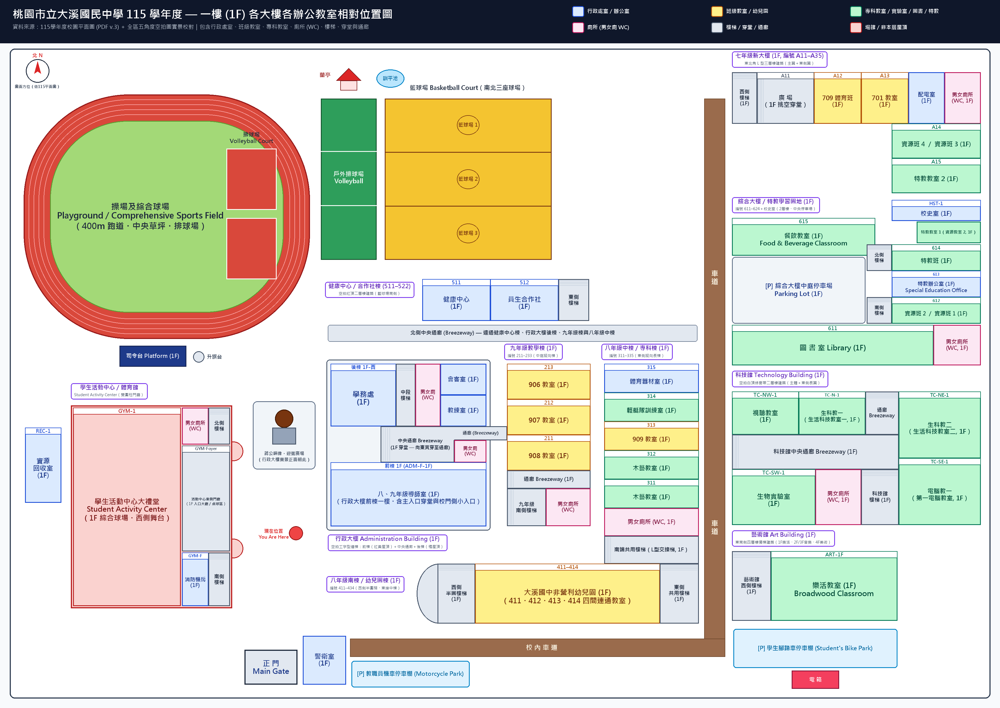
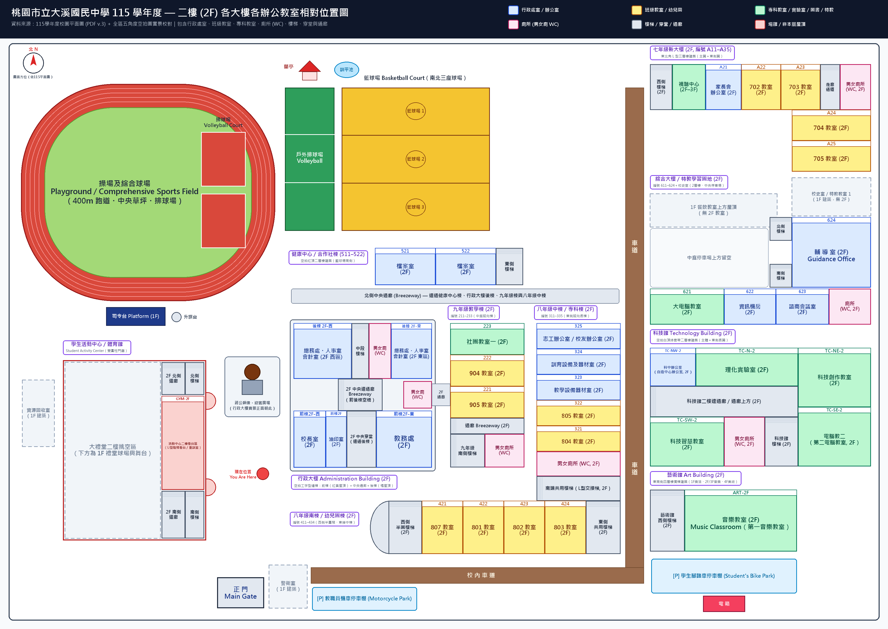
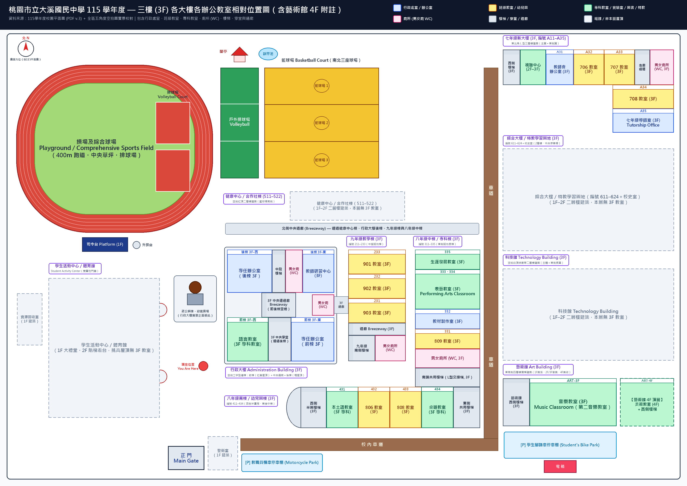

一樓 (1F) 各大樓各辦公教室相對位置圖

二樓 (2F) 各大樓各辦公教室相對位置圖 點擊圖片可於新視窗放大檢視原圖

三樓 (3F) 各大樓各辦公教室相對位置圖（含藝術館 4F 附註） 點擊圖片可於新視窗放大檢視原圖

各大樓 1F–3F 辦公處室、教室、專科教室、廁所與樓梯快速對照
1. 行政大樓（前棟＋中央通廊＋後棟）
- 1F 前棟八、九年級導師室（方案A全幅／方案B・C中央切出 1F 穿堂向北貫穿）
- 1F 後棟學務處（西側完整一大格）、中段樓梯、男女廁(WC)、會客室（右上）、教練室（右下）＋穿堂貫穿至東側通廊與男女廁(WC)
- 2F 前棟校長室、油印室、2F中央穿堂、教務處
- 2F 後棟總務處・人事室・會計室、中段樓梯、男女廁(WC)＋通廊東側男女廁(WC)
- 3F 前棟語言教室、3F中央穿堂、專任辦公室
- 3F 後棟專任辦公室、中段樓梯、男女廁(WC)、教師研習中心＋通廊東側男女廁(WC)
2. 健康中心／合作社棟（編號 511–522）
- 1F511 健康中心、512 員生合作社、東側樓梯
- 2F521 檔案室、522 檔案室、東側樓梯
- 3F無（空拍確認為二層樓紅頂建築）
3. 九年級教學棟（中庭縱棟 211–233）
- 1F213 (906)、212 (907)、211 (908)、通廊、南側樓梯＋男女廁所(WC)
- 2F223 (社團教室一)、222 (904)、221 (905)、通廊、南側樓梯＋男女廁所(WC)
- 3F233 (901)、232 (902)、231 (903)、通廊、南側樓梯＋男女廁所(WC)
4. 八年級中棟／專科棟（東側長縱棟 311–335）
- 1F315 體育器材室、314 輕艇隊訓練室、313 (909)、312 木藝教室、311 木藝教室、男女廁所(WC)、南端共用樓梯
- 2F325 志工／校友辦公室、324 訓育設備及器材室、323 教學設備器材室、322 (805)、321 (804)、男女廁所(WC)、南端共用樓梯
- 3F335 生涯發展教室、333・334 表藝教室、332 教材製作室、331 (809)、男女廁所(WC)、南端共用樓梯
5. 八年級南棟／幼兒園棟（南側橫棟 411–434）
- 1F西側半圓形樓梯、411–414 大溪國中非營利幼兒園、東側共用樓梯
- 2F西側半圓形樓梯、421 (807)、422 (801)、423 (802)、424 (803)、東側共用樓梯
- 3F西側半圓形樓梯、431 本土語教室、432 (806)、433 (808)、434 桌遊教室、東側共用樓梯
6. 七年級新大樓（東北角 L 型 A11–A35）
- 1F西側樓梯、A11 廣場、A12 (709體育班)、A13 (701)、配電室、男女廁所(WC)、A14 資源班4/資源班3、A15 特教教室2
- 2F西側樓梯、視聽中心(2F–3F)、A21 家長會辦公室、A22 (702)、A23 (703)、走廊通道、男女廁所(WC)、A24 (704)、A25 (705)
- 3F西側樓梯、視聽中心(2F–3F)、A31 教師會辦公室、A32 (706)、A33 (707)、走廊通道、男女廁所(WC)、A34 (708)、A35 七年級導師室
7. 綜合大樓／特教學習園地（編號 611–624＋校史室）
- 1F校史室、特教教室1(資源教室2)、615 餐飲教室、中庭停車場、北側樓梯、614 特教班、613 特教辦公室、南側樓梯、612 資源班2/1、611 圖書室、男女廁所(WC)
- 2F北側樓梯、624 輔導室、南側樓梯、621 大電腦教室、622 資訊機房、623 諮商會議室、廁所(WC)
- 3F無（二層樓建築）
8. 科技館（中東側 2F）
- 1F視聽教室、生科教一、中央通廊、生物實驗室、男女廁所(WC)、科技館樓梯、生科教二、電腦教一
- 2F科中辦公室（自造中心辦公室）、理化實驗室、二樓連通廊、科技智慧教室、男女廁所(WC)、科技館樓梯、科技創作教室、電腦教二
- 3F無（二層樓建築）
9. 藝術館（東南側 4F）＆ 西南區場館
- 1F 藝術館西側樓梯、樂活教室
- 2F 藝術館西側樓梯、音樂教室（第一音樂教室）
- 3F 藝術館西側樓梯、音樂教室（第二音樂教室）
- 4F 藝術館西側樓梯、美術教室
- 西南區學生活動中心（1F大禮堂・男女廁・消防機房・南北雙梯／2F看台區）、資源回收室(1F)、警衛室(1F)